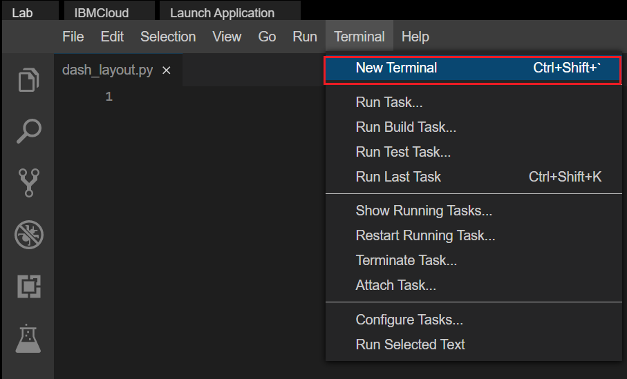
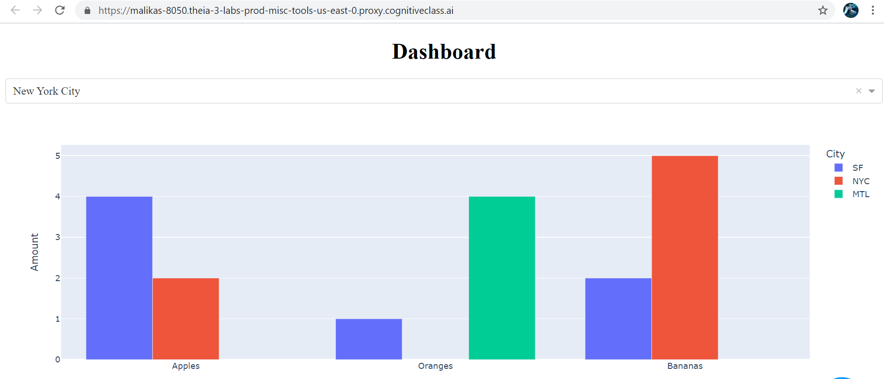
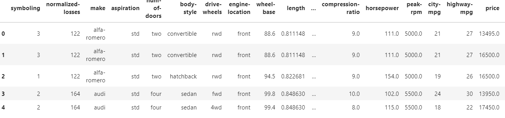

After completing the lab you will be able to:
Estimated time needed: 45 minutes
This Skills Network Labs Cloud IDE (Integrated Development Environment) provides a hands-on environment in your web browser for completing course and project related labs. It utilizes Theia, an open-source IDE platform, that can be run on desktop or on the cloud. So far in the course you have been using Jupyter notebooks to run your python code. This IDE provides an alternative for editing and running your Python code. In this lab you will be using this alternative Python runtime to create and launch your Dash applications.
Please be aware that sessions for this lab environment are not persisted. When you launch the Cloud IDE, you are presented with a 'dedicated computer on the cloud' exclusively for you. This is available to you as long as you are actively working on the labs.
Once you close your session or it is timed out due to inactivity, you are logged off, and this ‘dedicated computer on the cloud’ is deleted along with any files you may have created, dowloaded or installed. The next time you launch this lab, a new environment is created for you.
If you finish only part of the lab and return later, you may have to start from the beginning. So, it is a good idea to plan to your time accordingly and finish your labs in a single session.

cmake
pip3 install pandas dash
Let's start with
html.H1() tag
dash_layout.py
dash_layout.py script and review the code.
coffeescript
# Import required packages
import pandas as pd
import dash
import dash_core_components as dcc
import dash_html_components as html
import plotly.express as px
from dash.dependencies import Input, Output
# Add Dataframe
# Add a bar graph figure
app = dash.Dash()
app.layout = html.Div(children=[
html.H1(
children='Dashboard',
style={
'textAlign': 'center'
}
)
# Create dropdown
# Bar graph
])
# Run Application
if __name__ == '__main__':
app.run_server()
Save option from File menu.
vim
python3 dash_layout.py
Launch Application option from the menu bar.
OK
Note: If you are not able to see the application after launching just check the pop up window for your browser is enabled.
Dropdown off dash_core_components and passing the options as a list of dictionaries. You can set the default value using the value attribute and passing in the default option.Note:
- Add a comma (,) before the placeholder in the skeleton file and then place the code.
- The placeholder here is "# Create dropdown " in the skeleton file.
scheme
# Create dropdown
dcc.Dropdown(options=[
{'label': 'New York City', 'value': 'NYC'},
{'label': 'Montréal', 'value': 'MTL'},
{'label': 'San Francisco', 'value': 'SF'}
],
value='NYC' # Providing a vallue to dropdown
)
Assume you have a dataframe as:
Note: Place the code under the placeholder # Add Dataframe in the skeleton file copied before.
json
# Add Dataframe
df = pd.DataFrame({
"Fruit": ["Apples", "Oranges", "Bananas", "Apples", "Oranges", "Bananas"],
"Amount": [4, 1, 2, 2, 4, 5],
"City": ["SF", "SF", "SF", "NYC", "MTL", "NYC"]
})
The plotly.express module (usually imported as px) contains functions that can create entire figures at once, and is referred to as Plotly Express or PX. Plotly Express is a built-in part of the plotly library, and is the recommended starting point for creating most common figures
In order to create a graph on our layout, we use the Graph class from dash_core_components.
Note: Place the code under the placeholder # Add a bar graph figure in the skeleton file copied before.
routeros
# Add a bar graph figure
fig = px.bar(df, x="Fruit", y="Amount", color="City", barmode="group")
Note: Place the code under the placeholder # Bar graph figure in the skeleton file copied before and also add a comma , before the placeholder.
reasonml
# Bar graph
dcc.Graph(id='example-graph-2',figure=fig)
The dashboard with the dropdown and the bar graph is displayed as below.

Note: Here we are just creating the dropdown and bar chart without any functionality. Let's start with the real dataset to get the dropdown functionality with the graph. When you finish running the application press thekey
Ctrl+Cnear the terminal window
to stop the running application and begin with the new application.
For complete code click HERE.
Here we are looking into an automobile dataset which has various attributes like drive-wheels,body-style and price.
Lets view the snapshot of our selected dataset.

Here let's say we are selecting 3 important features drive-wheels, body-style and Price.
The possible values of drive-wheels are 4 wheel Drive(4wd),Front WheelDrive(fwd) and Rear wheel Drive(rwd).
The different body styles of the cars are hardtop,sedan,convertible and so on.
There are 2 types of people here:
A customer who wants to purchase the cars with less price , different body styles and wants to look for the drive wheel with this arrangement.
A dealer who wants to showcase the prices for the cars with different body styles and drive wheels.
As a data analyst, you have been given a task to visually show the body-style and prices with respect to each drive wheel selected.
So ideally you want to showcase this in the form of 2 interactive charts such as pie chart and bar chart on selection of drive wheel.
Below is the key item,
Drive Wheel Type
For the chosen Drive wheel,
Pie Chart showing body style and price.
Bar Chart showing body style and price.
awk
wget https://cf-courses-data.s3.us.cloud-object-storage.appdomain.cloud/IBMDeveloperSkillsNetwork-DA0101EN-SkillsNetwork/labs/Data%20files/automobileEDA.csv
The csv gets downloaded.
You can use this as a base code to complete the task below.
Create a new file called Dash_Auto.py
Copy the code mentioned in the skeleton file and save it.
pgsql
import pandas as pd
import dash
import dash_html_components as html
import dash_core_components as dcc
from dash.dependencies import Input, Output, State
import plotly.graph_objects as go
import plotly.express as px
from dash import no_update
app = dash.Dash(__name__)
# REVIEW1: Clear the layout and do not display exception till callback gets executed
app.config.suppress_callback_exceptions = True
# Read the automobiles data into pandas dataframe
auto_data = pd.read_csv('automobileEDA.csv',
encoding = "ISO-8859-1",
)
#Layout Section of Dash
app.layout = html.Div(children=[#TASK 3A
#outer division starts
html.Div([
# First inner divsion for adding dropdown helper text for Selected Drive wheels
html.Div(
#TASK 3B
),
#TASK 3C
#Second Inner division for adding 2 inner divisions for 2 output graphs
html.Div([
#TASK 3D
], style={'display': 'flex'}),
])
#outer division ends
])
#layout ends
#Place to add @app.callback Decorator
#TASK 3E
#Place to define the callback function .
#TASK 3F
if __name__ == '__main__':
app.run_server()

Search/Look for TASK word in the script to identify places where you need to complete the code.
Update the html.H1() tag to hold the application title.
Car Automobile Componentscenter aligned, with color code #503D36, and font-size as 24
scheme
html.H1('Car Automobile Components',
style={'textAlign': 'center', 'color': '#503D36',
'font-size': 24}),
After updating the html.H1() with the application title, the app.layout will look like:
Reference Links: H1 component
Use the html.H2() tag to hold the label for the dropdown inside the first inner division
Label is Drive Wheels Type:
Use style parameter provided below to allign the label margin-right with value 2em which means 2 times the size of the current font.
scheme
html.H2('Drive Wheels Type:', style={'margin-right': '2em'}),
After updating the label the app.layout will now look like this
The dropdown has an id as demo-dropdown.
These options have the labels as Rear Wheel Drive ,Front Wheel Drive and Four Wheel Drive
The values allowed in the dropdown are rwd,fwd,4wd
The default value when the dropdown is displayed is rwd.
scheme
dcc.Dropdown(
id='demo-dropdown',
options=[
{'label': 'Rear Wheel Drive', 'value': 'rwd'},
{'label': 'Front Wheel Drive', 'value': 'fwd'},
{'label': 'Four Wheel Drive', 'value': '4wd'}
],
value='rwd'
),
Reference link
Once you add the dropdown the 'app.layout will appear as follows
Use 2 html.Div() tags .
Provide division ids as plot1 and plot2.
ini
html.Div([ ], id='plot1'),
html.Div([ ], id='plot2')
Once you add the divisions the 'app.layout will appear as follows
inputs and outputs of our application's interface are described declaratively as the arguments of @app.callback decorator.-In Dash, the inputs and outputs of our application are simply the properties of a particular component.
In this example, our input is the value property of the component that has the ID demo-dropdown
Our layout has 2 outputs so we need to create 2 output components.
It is a list with 2 output parameters with component id and property. Here, the component property will be children as we have created empty division and passing in dcc.Graph (figure) after computation.
Component ids will be plot1 , plot2.
routeros
@app.callback([Output(component_id='plot1', component_property='children'),
Output(component_id='plot2', component_property='children')],
Input(component_id='demo-dropdown', component_property='value'))
Once you add the callback decorator the 'app.layout will appear as follows
display_selected_drive_charts() which will be wrapped by our decorator.auto_data by the selected value of the drive-wheels from the dropdown as followsauto_data[auto_data['drive-wheels']==value] .drive-wheels and body-style and calculate the mean price of the dataframe.px.pie() and px.bar() function we will plot the pie chart and bar chart
routeros
def display_selected_drive_charts(value):
filtered_df = auto_data[auto_data['drive-wheels']==value].groupby(['drive-wheels','body-style'],as_index=False). \
mean()
filtered_df = filtered_df
fig1 = px.pie(filtered_df, values='price', names='body-style', title="Pie Chart")
fig2 = px.bar(filtered_df, x='body-style', y='price', title='Bar Chart')
return [dcc.Graph(figure=fig1),
dcc.Graph(figure=fig2) ]
filtered dataframe where values correspond to price and names will be body-stylefiltered dataframe where x-axis corresponds to body-style and y-axis as price.fig1 and fig2 in dcc.Graph method and finally the plots are displayed as follows
cmake
pip3 install pandas dash
reasonml
python3 Dash_Auto.py
Launch Application option from the menu bar.

OK
| Date | Version | Changed by | Change Description |
|---|---|---|---|
| 2021-07-21 | 0.1 | Lakshmi Holla, Malika Singla | Initial Version |